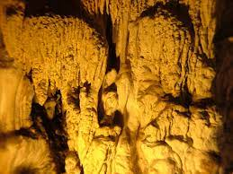
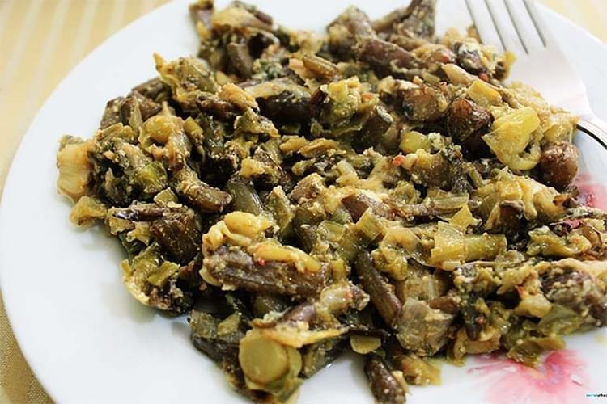
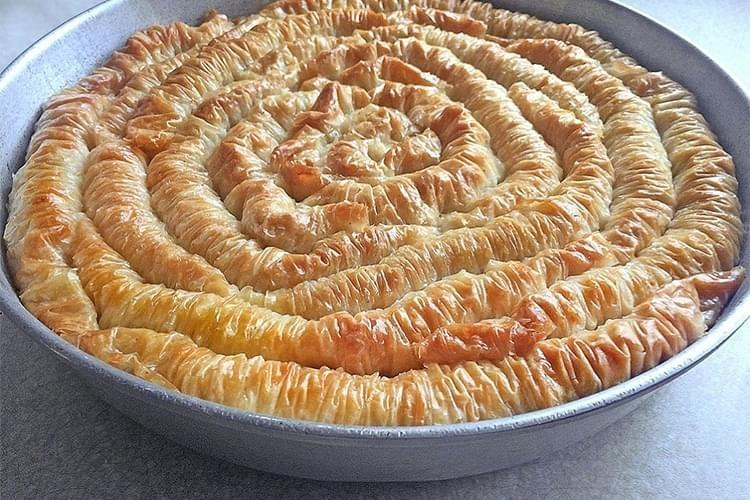

Bartın Hakkında
İlçeleri
- ULUS
- MERKEZ
- AMASRA
En Çok Bilinen Tarihi Mekanları
| Amasra Kalesi |  |
|
| Çenovo Şatosu |  |
|
| Kuşkayası Yol Anıtı |  |
Doğal Güzellikleri
| Güzelcehisar Lav Sütunları | |
 |
Çapları 50 – 100 cm, boyları ise 30 metre üzerinde olan Lav Sütunları çok eski bir yanardağın akıntılarından meydana gelmiş doğal güzelliklerdendir. Lav Sütunları’nın bulunduğu bölgede dünyanın en eski 3 yanardağından birinin kalıntılarını da görmek mümkündür. |
| Gürcüoluk Mağarası | |
|  | Amasra ilçe merkezine 10 km mesafede yer alan Gürcüoluk Mağarası, 169 metre uzunluğundadır. Tek galeriden oluşan mağaranın içerisinde sarkıt, sütun ve dikitler ile damlataşların oluşturduğu odacıklar yer almaktadır. Gürcuoluk Mağarası, tabiat parkı statüsünde olup, şehrin doğa turizminde gelişmesini sağlamaktadır. |
Yemekleri
| Pum Pum Çorbası | Yumurtalı İsput | Kabak Burması |
 |
 |  |